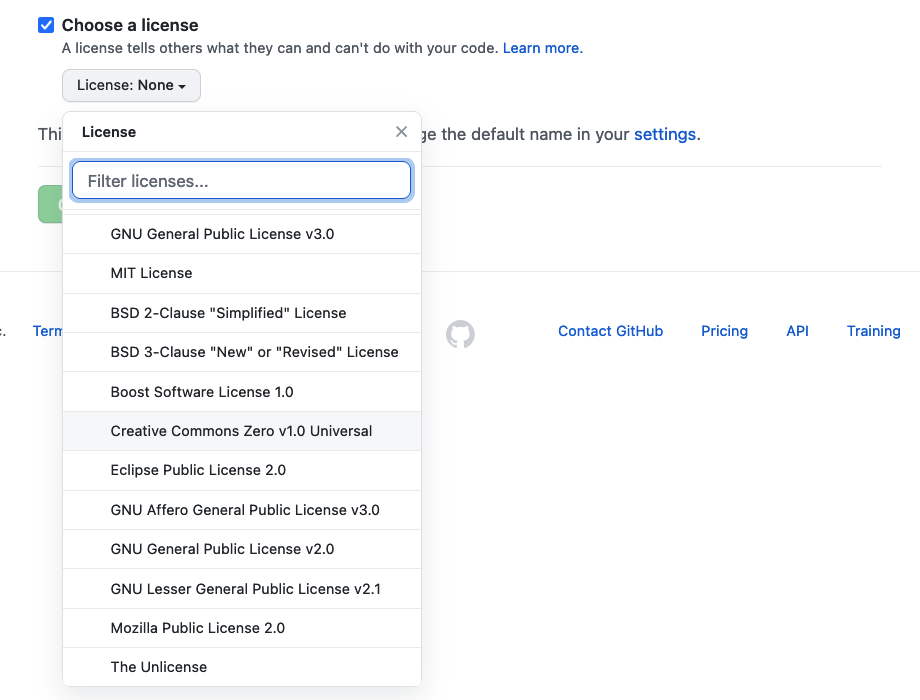
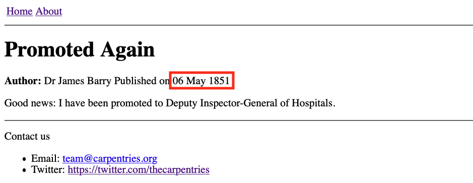
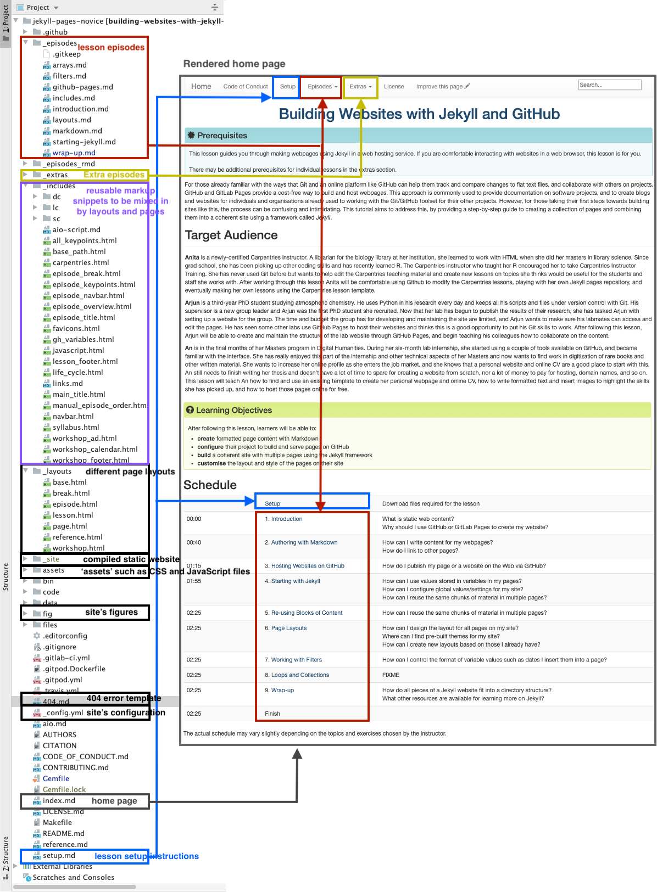

Let’s write a more complex HTML example using a table showing the
“Hello, World!” text in different languages that renders like:
Figure 2
Image 1 of 1: ‘HTML list example’
A similar example written using HTML lists would look as follows:
Figure 3
Image 1 of 1: ‘Pages can be created in several ways: static server-side generation (where HTML is generated once on the server and doesn'tchange thereafter), dynamic server-side generation (where the server can update and send new HTML based on requests fromthe user's browser), and client-side generation (where parts of HTML pages are generated by the browser using Javascript code)’
Figure 4
Image 1 of 1: ‘Static websites in GitHub Pages technology overview diagram’
Figure 5
Image 1 of 1: ‘New repository button’
Figure 6
Image 1 of 1: ‘Dropdown plus menu with new repository option highlighted’
Figure 7
Image 1 of 1: ‘Blank new repository page’
Figure 8
Image 1 of 1: ‘New repository - set name to group-website’
Figure 9
Image 1 of 1: ‘New repository - set description’
Figure 10
Image 1 of 1: ‘Initialise a new repository with a README and a licence file’
Figure 11
Image 1 of 1: ‘Set licence to CC0’

Figure 12
Image 1 of 1: ‘Filled in form with a create repository button’
Figure 13
Image 1 of 1: ‘Github repository for the group website’
Image 1 of 1: ‘Blog post '1851-05-06' with human readable date using ordinal parameter’
Figure 4
Image 1 of 1: ‘Blog post '1851-05-06' with human readable date without ordinal parameter’
Without the ordinal argument,
date_to_long_string produces the output
06 May 1851 (i.e. using the two digits to represent day).
Whether you prefer this format is entirely subjective, and we encourage
you to use which ever you prefer in your post layout. 
Image 1 of 1: ‘Static websites in GitHub Pages technology overview diagram’
Throughout this lesson, we learned how to create formatted
webpage content with Markdown, configure a
GitHub repository to use the Jekyll static site generator, and how to use
Jekyll to build our Markdown pages and various other files (HTML
snippets, CSS, images, etc.) into a set of HTML documents that are then
served via the GitHub Pages framework. HTML is the basic building block of
webpages served on the Internet. It describes the structural elements of
the page and their raw content and is often aided by
CSS - an ordered set of styling instructions telling
the browser how the content described in the HTML document should be
organised and formatted. HTML is very verbose and difficult to write by
hand - beyond their initial design HTML pages are meant to be processed
by machines. For that reason, Markdown was introduced -
a lightweight Markup language and a convention for adding style
information to textual content while retaining the human-readable form.
It is not as rich in syntax as HTML, but comparably more usable by a
wider audience.
Figure 2
Image 1 of 1: ‘Directory structure of a jekyll website containing this lesson’

Figure 3
Image 1 of 1: ‘the GitHub interface fork button’
Figure 4
Image 1 of 1: ‘GitHub copying the fork’
Figure 5
Image 1 of 1: ‘GitHub branching dropdown menu with gh-pages typed in box’


 Edit
Edit